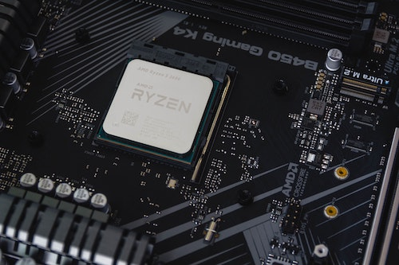

Cheap Complexity and Cybersecurity
A recurrent theme of modern security is the importance of complexity and the difficulty of containing it. With GPUs, NICs, basebands, and specialized hardware such as TPUs, things are objectively getting more complicated at a superlinear rate.
In a world where complexity continues to grow, it is hard to provide security guarantees. The problem of escalating complexity becomes an escalated security problem.
What’s driving the complexity?
“How does one design an electric motor? Would you attach a bathtub to it simply because one was available? Would a bouquet of flowers help? A heap of rocks? No, you would use just those elements necessary to its purpose and make it no larger than needed-and you would incorporate safety factors. Function controls design. So it is with revolution.”
-Robert A. Heinlein, The Moon Is a Harsh Mistress
In traditional engineering, a more complex device will be more expensive to build than a simpler device.
However, this is not the case in modern computing. It’s often more cost-effective to take a very complicated device and make it simulate simplicity than to make a simpler device.
In other words, software makes adding bathtubs, bouquets of flowers, and rocks almost free. So that’s what we get.
This is called “anomaly of cheap complexity”. The anomaly is driven by two forces: universal computation and Moore’s Law.
Universal Computation and Moore’s Law
Universal Computation means I can simulate one machine with another. In most practical scenarios, it’s much cheaper to simulate a finite-state machine with a general-purpose CPU.
Universal Computation means I don’t have to physically build the machine I want. I can simply simulate it.
Meanwhile, Moore’s Law generates massive economies of scale for general-purpose CPUs. Once we have a general-purpose CPU, we can compile most of the software in the world for the platform. Adding more features, more complexity, and more code is almost free.
The Impacts of Cheap Complexity

The four impacts of cheap complexity are:
- Software security issues: software specializes a general-purpose CPU to perform a specific task with a strictly limited number of possible states and state transitions. When something goes wrong, the limits we impose can go out the window.
- Software supply chain issues: software is easy to reuse and is also mostly free.
- Hardware security/reliability & supply chain issues: We have to trust our CPU vendors given today’s software and systems. Establishing “who’s in control” is near-impossible against strong adversaries.
- Lack of device inspectability
The Root Cause
The pervasive insecurity of modern IT infrastructure is driven by the same forces that made IT a success in the first place:
- Genericity and economies of scale make complexity cheaper than simplicity.
- Universal Computation and Moore’s Law provide exponential cost reduction.
- Near-zero short-term marginal cost of adding software complexity
Inspectability is the most fundamental issue, and also the most impactful one. Modern clouds rely on non-existing inspectability to provide security for multi-tenancy. They also need inspectability to create a fine-grained billing system for their customers.
Inspectability requires collaboration between the hardware folks (providers of the ability) and the software folks (consumers of the ability). Such collaboration is still rare.
How do we fix it?
The End of Moore’s Law as an Opportunity
Security and inspectability require a lot of re-engineering. No one wants to re-engineer an entire legacy infrastructure just because it’s more secure. It’s not economical. It requires co-design of hardware and software.
Luckily, single-core scaling is dead. And we’re designing new architectures and programming models for the first time since the 1980s, for good economic reasons.
We already have a good example of the approach: Rust. Most companies adopt Rust due to its economic benefits: fearless concurrency and faster software. But it also introduced a huge benefit to security: using the type system to kill entire fields of exploits (use-after-frees).
Conclusion
Vulnerability is a corollary to complexity. We proliferate complexity in part because cheap cores can simulate anything. Secure kernels are possible, but nobody wants to rewrite all legacy software. However, this will be unavoidable for new parallel architectures.
Our understanding of modern CPUs has already stopped being a reality since Pentium 6 (see Spectre and Meltdown ).
This is a historic opportunity to influence the design of computing for the next N years.
Reference
This post is pretty much a digest of Halver Flake’s amazing talk at CYCON mixed with my thoughts. I encourage you to watch the origin talk.